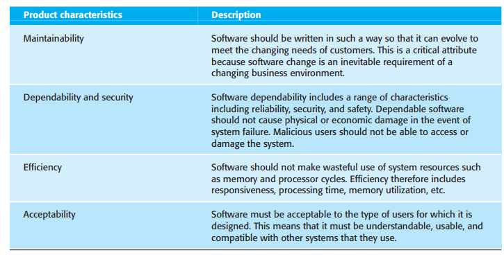

1.1 Professional software development
1.1.1 What is software?
Many people think that software is simply another word for computer programs. However, when we are talking about software engineering, software is not just the programs themselves but also all associated documentation and configuration data that is required to make these programs operate correctly. A professionally developed software system is often more than a single program. The system usually consists of a number of separate programs and configuration files that are used to set up these programs. It may include system documentation, which describes the structure of the system; user documentation, which explains how to use the system, and websites for users to download recent product information.

1.1.2 Software products
There are two kinds of software products:
- Generic products – These are stand-alone systems that are produced by a development organization and sold on the open market to any customer who is able to buy them. Examples of this type of product include software for PCs such as databases, word processors, drawing packages, and project management tools.
- Customized (or bespoke) products – These are systems that are commissioned by a particular customer. A software contractor develops the software especially for that customer. Examples include control systems for electronic devices, systems written to support a particular business process, and air traffic control systems.
An important difference between these types of software is that, in generic products, the organization that develops the software controls the software specification. For custom products, the specification is usually developed and controlled by the organization that is buying the software. The software developers must work to that specification.
However, the distinction between these system product types is becoming increasingly blurred. More and more systems are now being built with a generic product as a base, which is then adapted to suit the requirements of a customer. Enterprise Resource Planning (ERP) systems, such as the SAP system, are the best examples of this approach. Here, a large and complex system is adapted for a company by incorporating information about business rules and processes, reports required, and so on.
1.1.3 Software engineering and the Web
The development of the World Wide Web has had a profound effect on all of our lives. Initially, the Web was primarily a universally accessible information store and it had little effect on software systems. These systems ran on local computers and were only accessible from within an organization. Around 2000, the Web started to evolve and more and more functionality was added to browsers. This meant that web-based systems could be developed where, instead of a special-purpose user interface, these systems could be accessed using a web browser. This led to the development of a vast range of new system products that delivered innovative services, accessed over the Web. These are often funded by adverts that are displayed on the user’s screen and do not involve direct payment from users.
As well as these system products, the development of web browsers that could run small programs and do some local processing led to an evolution in business and organizational software. Instead of writing software and deploying it on users’ PCs, the software was deployed on a web server. This made it much cheaper to change and upgrade the software, as there was no need to install the software on every PC. It also reduced costs, as user interface development is particularly expensive. Consequently, wherever it has been possible to do so, many businesses have moved to web-based interaction with company software systems.
The next stage in the development of web-based systems was the notion of web services. Web services are software components that deliver specific, useful functionality and which are accessed over the Web. Applications are constructed by integrating these web services, which may be provided by different companies. In principle, this linking can be dynamic so that an application may use different web services each time that it is executed. I cover this approach to software development in Chapter 19.
In the last few years, the notion of ‘software as a service’ has been developed. It has been proposed that software will not normally run on local computers but will run on ‘computing clouds’ that are accessed over the Internet. If you use a service such as web-based mail, you are using a cloud-based system. A computing cloud is a huge number of linked computer systems that is shared by many users. Users do not buy software but pay according to how much the software is used or are given free access in return for watching adverts that are displayed on their screen.
The advent of the web, therefore, has led to a significant change in the way that business software is organized. Before the web, business applications were mostly monolithic, single programs running on single computers or computer clusters. Communications were local, within an organization. Now, software is highly distributed, sometimes across the world. Business applications are not programmed from scratch but involve extensive reuse of components and programs.
This radical change in software organization has, obviously, led to changes in the ways that web-based systems are engineered. For example: